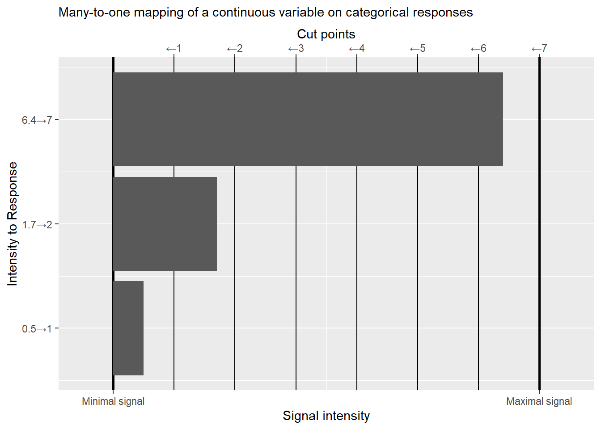
19 Ordered Categorical Data, i.e., Likert-scales
One very popular type of response in psychology and social sciences are so-called Likert-scale responses. For example, you may be asked to respond on how attractive you find a person in a photo from 1 (very unattractive) to 7 (very attractive). Or to respond on how satisfied you are with a service from 1 (very unsatisfied) to 4 (very satisfied). Or rate your confidence on a 5-point scale, etc. Likert-scale responses are extremely common and are quite often analyzed via linear models (i.e., a t-test, a repeated measures ANOVA, or linear-mixed models) assuming that response levels correspond directly to real numbers. The purpose of these notes is to document conceptual and technical problems this approach entails.
19.1 Conceptualization of responses: internal continuous variable discritized into external responses via a set of cut-points
First, let us think what behavioral responses correspond to as it will become very important once we discuss conceptual problems with a common “direct” approach of using linear models for Likert-scale data.
When we ask a participant to respond “On a scale from 1 to 7, how attractive do you find the face in the photo?”, we assume that there is a continuous internal variable (for example, encoded via a neural ensemble) that represents attractiveness of a face (our satisfaction with service, our confidence, etc.). The strength of that representation varies in a continuous manner from its minimum (e.g., baseline firing rate, if we assume that strength is encoded by spiking rate) to maximum (maximum firing rate for that neural ensemble). When we impose a seven-point scale on participants, we force them to discretize (bin) this continuous variable, creating a many-to-one mapping. In other words, a participant decides that values (intensities) within a particular range all get mapped on \(1\), a different but adjacent range of higher value corresponds to \(2\), etc. You can think about it as values within that range being “rounded”1 towards the mean that defines the responses. Or, equivalently, you can think in terms of cut points that define range for individual values. This is how the discretization is depicted in the figure below. If the signal is below the first cut point, our participant’s response is “1”. When it is between the first and second cut points, the response is “2” and so on. When it is to the right of the last sixth cut point, it is “7”. This conceptualization means that responses are an ordered categorical variable, as any underlying intensity for a response “1” is necessarily smaller than any intensity for response “2” and both are smaller than, again, any intensity for response “3”, etc.
As per usual, even when we use the same stimulus and ask the same question, participant’s internal continuous response varies from trial to trial due to noise. We model this by assuming that on a given trial a value is drawn from a normal distribution centered at the “true” intensity level2. When the noisy intensity is converted to discrete responses, their variability will depend on the location (mean) and the width (standard deviation) of this distribution. The broader this distribution and / or closer it is to a cut point, the more activity will “spill over” a cut point into adjacent regions and the more variable discrete responses will be.
Warning: Using `size` aesthetic for lines was deprecated in ggplot2 3.4.0.
ℹ Please use `linewidth` instead.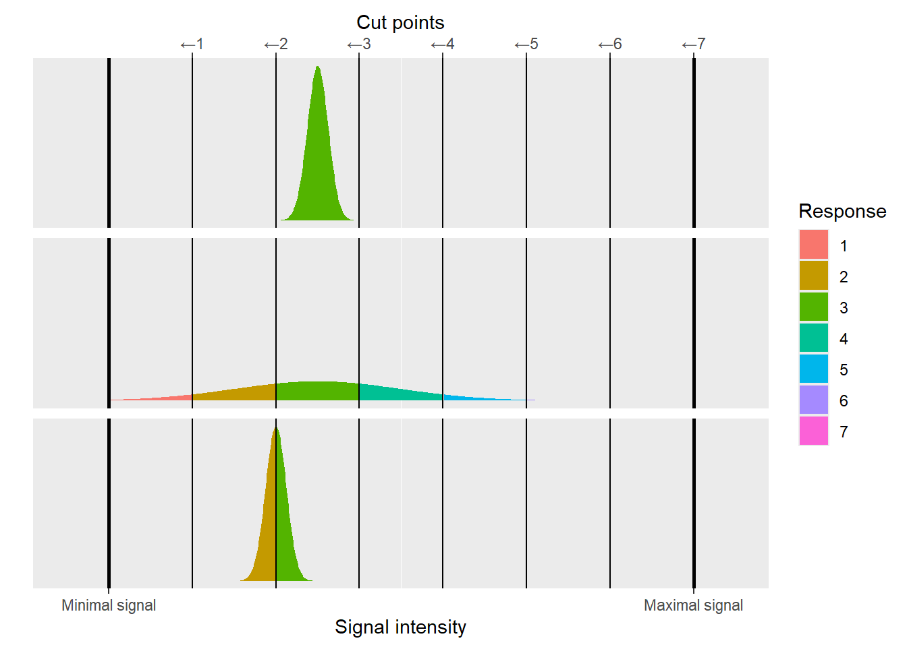
Given this conceptualization, our goal is to recover cut points and model shifts of the mean for the continuous internal variable (in response to our experimental manipulation) using only observed discrete responses.
19.2 Conceptual problem with linear models: we change our mind about what responses correspond to.
A very common approach is to fit Likert-scale data using a linear model (a t-test, a repeated-measures ANOVA, linear-mixed models, etc.) while assuming that responses correspond directly to real numbers. In other words, when participants responded “very unattractive”, or “not confident at all”, or “do not agree at all” they literally meant a real number \(1.0\). When they used the middle (let’s say the third on a five-point scale) option “neither agree, nor disagree” they literally meant \(3.0\).
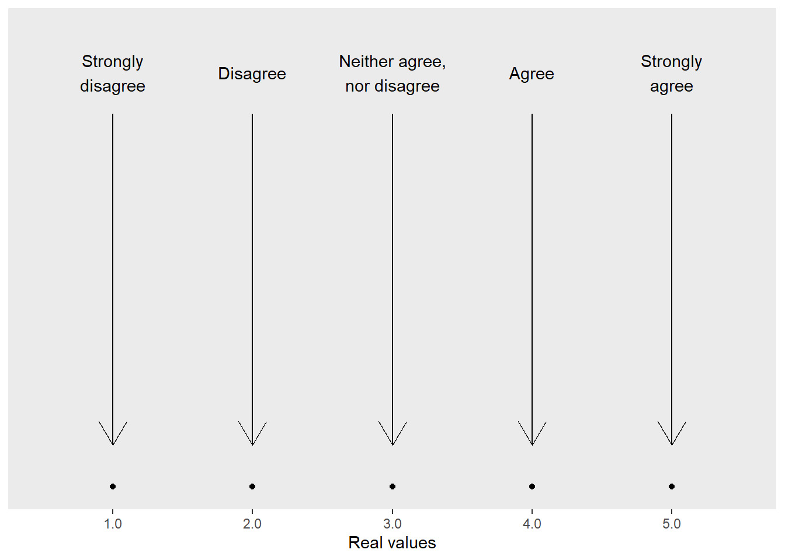
This assumption appears to simplify our life dramatically but at the expense of changing the narrative. Recall that our original (and, for me, very intuitive) conceptualization was that responses reflect a many-to-one mapping between an underlying continuous variable and a discrete (ordered categorical) response. But by converting them directly to real numbers and using them as an outcome variable of a linear model we assume a one-to-one mapping between the continuous real-valued internal variable and continuous(!) real-valued observed responses. This means that from a linear model point of view, for a 7-point Likert scale any real value is a valid and possible response and therefore a participant could have responded with 6.5, 3.14, or 2.71828 but, for whatever reason (sheer luck?), we only observed a handful of (integer) values.
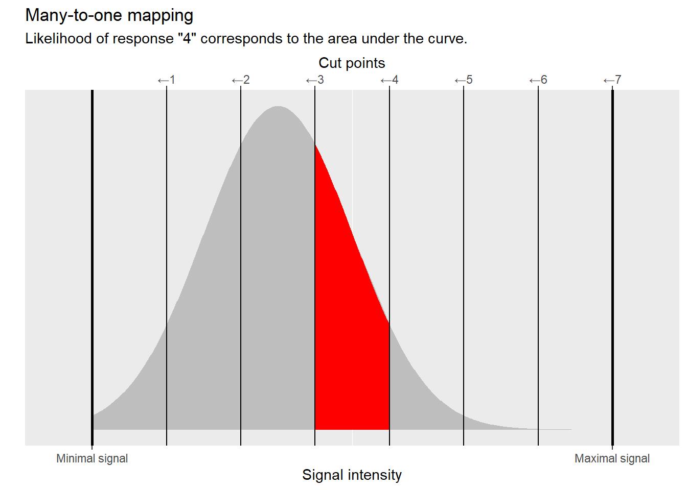
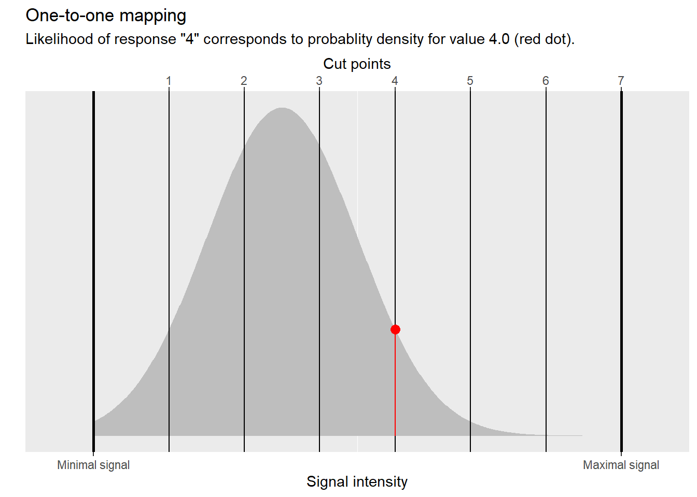
Notice that this is not how we thought participants behave. I think everyone3 would object to the idea that the limited repertoire of responses is due to endogenous processing rather than exogenous limitations imposed by an experimental design. Yet, this is how a linear model “thinks” about it given the outcome variable you gave it and, if you are not careful, it is easy to miss this change in the narrative. It is, however, important as it means that estimates produced by such a model are about that alternative one-to-one kind of continuous responses, not the many-to-one discrete ones that you had in mind! That alternative is not a bad story per se, it is just a different story that should not be confused with the original one.
This change in the narrative of what responses correspond to is also a problem if you want to use a (fitted) linear model to generate predictions and simulate the data. It will happily spit out real valued responses like 6.5, 3.14, or 2.718284. You have two options. You can bite the bullet and take them at their face value, sticking to “response is a real-valued variable” and one-to-one mapping between an internal variable and an observed response. That lets you keep the narrative but means that real and ideal observers play by different rules. Their responses are different and that means your conclusions based on an ideal observer behavior are of limited use. Alternatively, you can round real-valued responses off to a closest integer getting discrete categorical-like responses. Unfortunately, that means changing the narrative yet again. In this case, you fitted the model assuming a one-to-one mapping but you use its predictions assuming many-to-one. Not good. It is really hard to understand what is going on, if you keep changing your mind on what the responses mean. A linear model will also generate out-of-range responses, like -1 or 8. Here, you have little choice but to clip them into the valid range, forcing the many-to-one mapping on at least some responses. Again, change of narrative means that model fitting and model interpretation rely on different conceptualizations of what the response is.
This may sound too conceptual but I suspect that few people who use linear models on Likert-scale data directly realize that their model is not doing what they think it is doing and, erroneously!, interpret one-to-one linear-model estimates as many-to-one. The difference may or may not be crucial but, unfortunately, one cannot know how important it is without comparing two kinds of models directly. And that raises a question: Why employ a model that does something different to what you need to to begin with? Remember, using an appropriate model and interpreting it correctly is your job, not that of a mathematical model, nor is it a job of a software package.
19.3 A technical problem: Data that bunches up near a range limit.
When you use a linear model, you assume that residuals are normally distributed. This is something that you may not be sure of before you fit a specific model, as it is residuals not the data that must be normally distributed. However, in some cases you may be fairly certain that this will not be the case, such as when a variable has only a limited range of values and the mean (a model prediction) is close to one of these limits. Whenever you have observations that are close to that hard limit, they will “bunch up” against it because they cannot go lower or higher than that. See the figure below for an illustration of how it happens when a continuous variable \(x\) is restricted to 1 to 7 range5.
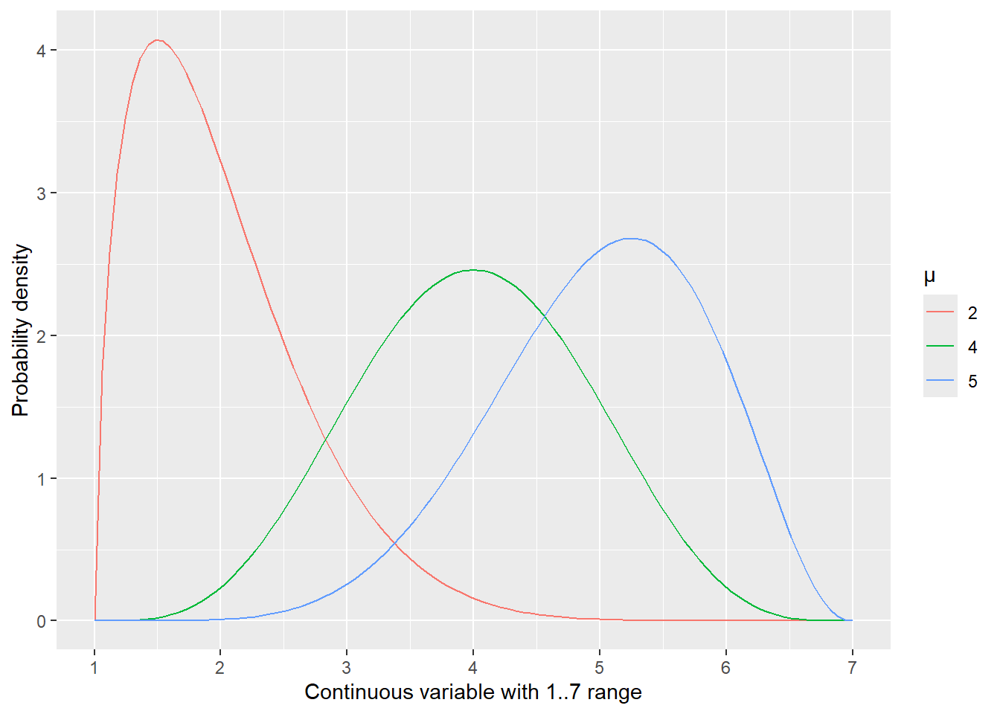
The presence of a limit is not a deal breaker for using linear models per se. Most physical measures cannot be negative6 but as long your observations are sufficiently far away from zero, you are fine. You cannot have a negative height but you certainly can use linear models for adult height as, for example, an average female height in USA is 164±6.4 cm. In other words, the mean is more than 25 standards deviations away from the range limit of zero and the latter can be safely ignored.
Unfortunately, Likert-scale data combines an extremely limited range with a very coarse step. Even a 7-point Likert scale does not give you much wiggle room and routinely used 5-point scales are even narrower. This means that unless the mean is smack in the middle (e.g., at four for a 7-point scale), you are getting closer to one of the limits and your residuals become either positively (when approaching a lower limit) or negatively (for the upper one) skewed. In other words, the residuals are systematically not normally distributed and their distribution depends on the mean. This clearly violates an assumption of normality of residuals and of their conditional i.i.d. (Independent and Identically Distributed). This is a deal breaker for parametric frequentist statistics (a t-test, a repeated-measures ANOVA, linear-mixed models), as their inferences are built on that assumptions and, therefore, become unreliable and should not to be trusted.
19.4 Another technical problem: Can we assume that responses correspond to real numbers that we picked?
The skewed residuals described above are a fundamental problem for parametric frequentist methods but are not critical if you use Bayesian or non-parametric bootstrapping/permutation linear models. Does this mean it is safe to use them? Probably not. When you use responses directly, you assume a direct correspondence between a response label (e.g., “agree”) and a real number \(4.0\). If your responses do correspond to the real numbers you have picked, you can perform the usual arithmetic with them. E.g., you can assume that \((4.0 + 4.0) / 2\) is equal to \((3.0 + 5.0) / 2\) to \((2.0 + 6.0) / 2\) to \((1.0 + 7.0)/ 2\). However, what if this is not the case, what if the responses do not correspond to the real numbers that you’ve picked? Then our basic arithmetic stops working the way you think! Take a look at the figure below where “real value” of responses is not an integer that we have picked for it.
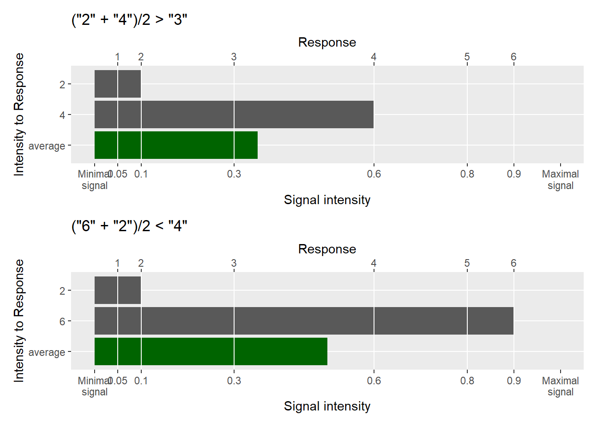
Unless you know that the response levels correspond to the selected real number and that the simple arithmetic holds, you are in danger of computing nonsense. This problem is more obvious when individual response levels are labelled, e.g., "Strongly disagree", "Disagree", "Neither disagree, nor agree", "Agree", "Strongly agree". What is an average of "Strongly disagree" and "Strongly agree"? Is it the same as an average of "Disagree" and "Agree"? Is increase from "Strongly disagree" to "Disagree" identical to that from "Neither disagree, nor agree" to "Agree"? The answer is “who knows?!” but in my experience scales are rarely truly linear as people tend to avoid extremes and have their own idea about the range of internal variable levels that corresponds to a particular response.
As noted above, even when scale levels are explicitly named, it is very common to “convert” them to numbers because you cannot ask a computer to compute an average of "Disagree" and "Agree" (it will flatly refuse to do this) but it will compute an average of \(2\) and \(4\). And there will be no error message! And it will return \(3\)! Problem solved, right? Not really. Yes, the computer will not complain but this is because it has no idea what \(2\) and \(4\) stand for. You give it real numbers, it will do the math. So, if you pretend that "Disagree" and "Agree" correspond directly to \(2\) and \(4\) it will certainly look like normal math. And imagine that responses are "Disagree" and "Strongly agree", so the numbers are \(2\) and \(5\) and the computer will return an average value of \(3.5\). It will be even easier to convince yourself that your responses are real numbers (see, there is a decimal point where!), just like linear models assume. Unfortunately, you are not fooling the computer (it seriously does not care), you are fooling yourself. Your math might check out, if the responses do correspond to the real numbers you have picked, or it might not. And in both cases, there will be no warning or an error message, just some numbers that you will interpret at their face value and reach possibly erroneous conclusions. Again, the problem is that you wouldn’t know whether the numbers you are looking at are valid or nonsense and the same dilemma (valid or nonsense?) will be applicable to any inferences and conclusions that you draw from them. In short, a direct correspondence between response levels and specific real numbers is a very strong assumption that should be validated, not taken on pure faith.
19.5 Solution: an ordered logit/probit model
So far I have summarized problems of using linear models when assuming that responses correspond to real numbers. How can we solve them? By using ordered logistic/probit models. They are built using the many-to-one mapping between a continuous variable that has a limited range (for simplicity it ranges from 0 to 1) and is discretized to match behavioral responses using a set of cut points. In principle, the latter can be fixed but in most cases they should be fitted as part of the model. Both logit and probit models assume that the sampling distribution of the underlying continuous variable is a standard normal distribution and, therefore, both the continuous variable and cut points live on the infinite real number line that is transformed to 0..1 range via either a logit or a probit link function. Strictly speaking, the latter step is not necessary but makes things easier both for doing math and for understanding the outcome.
From a mathematical point of view, using logit and probit makes it easy to compute the area under the curve between two cut points. Logit or probit are cumulative functions, so for a standard normal distribution (centered at \(0\) with standard deviation of \(1\)) they compute an area under the curve starting from \(-\infty\) up to some point \(k_i\).
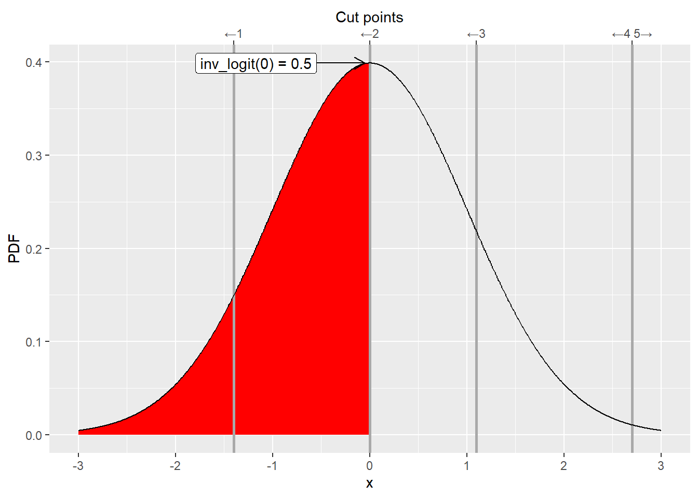
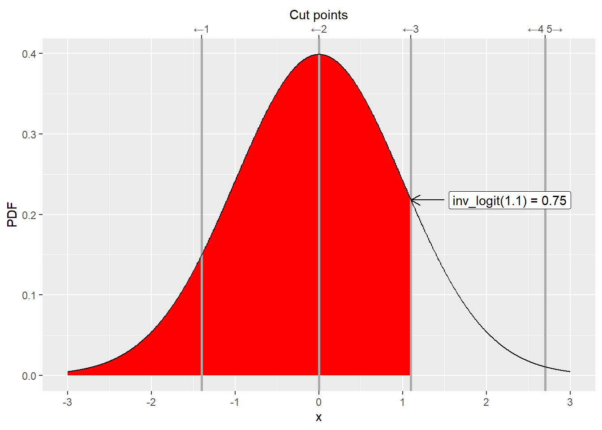
Therefore, if we want to compute an area between two cut points \(k_{i-1}\) and \(k_i\), we can do it as \(logit(k_{i})-logit(k_{i-1})\) (same goes for probit).
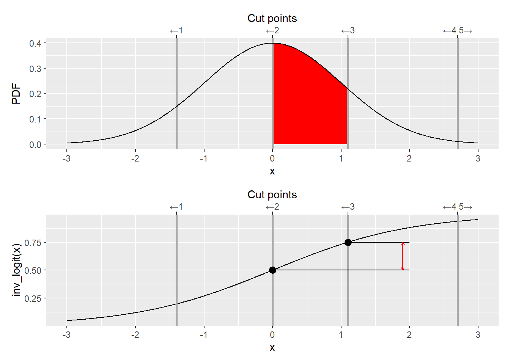
Because both logit and probit are non-linear transformations cut points evenly distributed on a 0..1 range will be not be evenly distributed on the real numbers line and vice versa. Transforming from real space to 0..1 range also makes it easier to understand relative positions of cut points and changes in the continuous variable (that we translate into discrete responses via cut points).
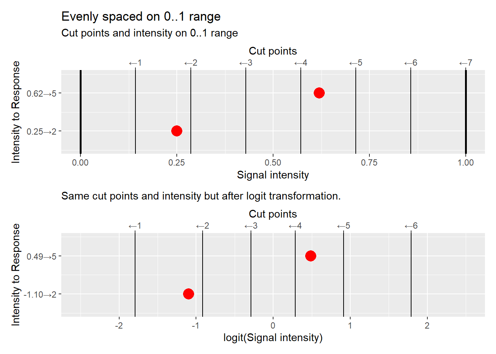
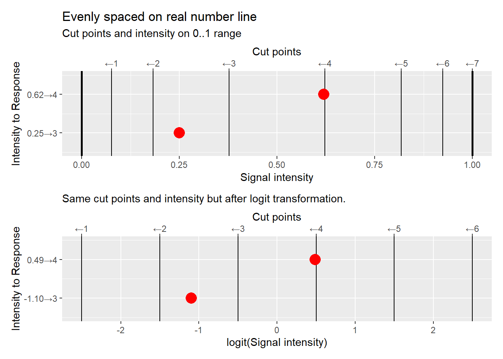
19.6 Using ordered logit/probit models
There are several R packages that implement regression models for ordinal data including specialized packages ordinal, oglmx, as well as via a ordered option in brms package.
From a coding point of view, fitting an ordered logit/probit the model is as easy as fitting any other regression model. However, the presence of the link function complicates its understanding as all parameters interact7. My current approach is not to try to interpret the parameters directly but to plot a triptych.
- Compute posterior predictions and compare their distribution with behavioral data to understand how well the model fits the data.
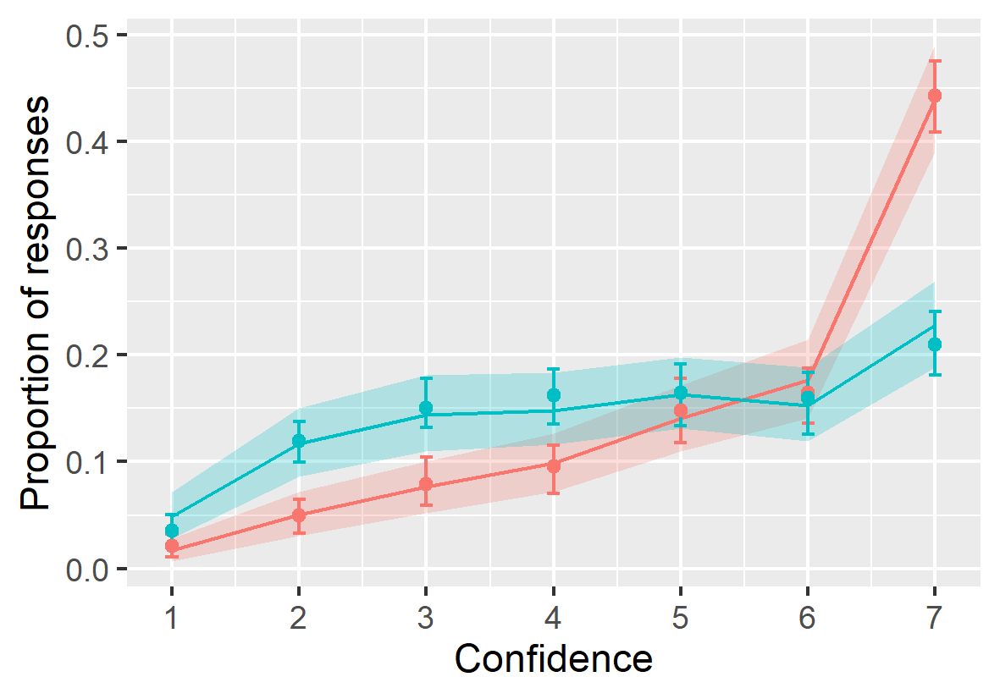
- Visualize cut points on a 0..1 range to understand the mapping between continuous intensity and discrete responses as well as uncertainty about their position.
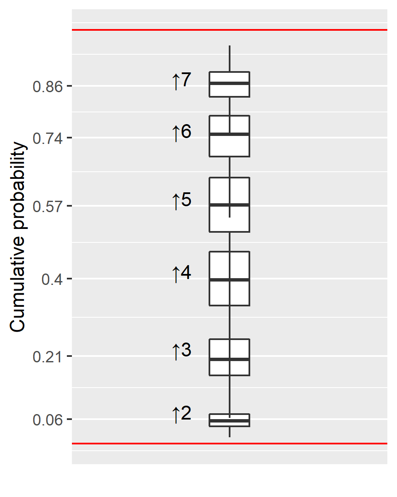
- Visualize and compare changes in continuous intensity on a 0..1 range adding cut points to facilitate understanding.
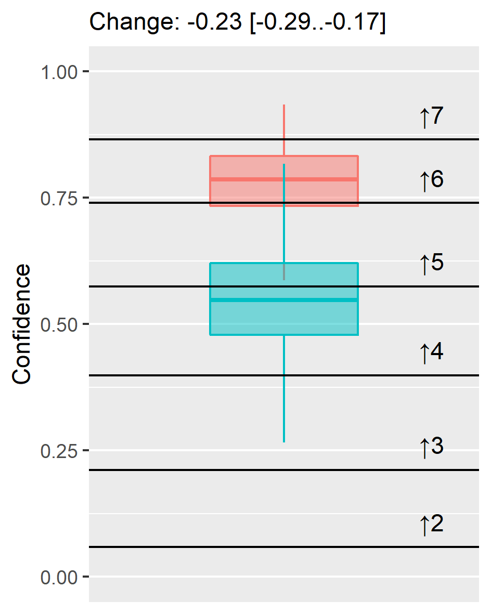
regressed?↩︎
Here, I will assume that cut points are fixed and it is parameters of the normal distribution that get adjusted. The actual implementation of ordered logit/probit models has it the other way around, so that intensity always comes from a normal distribution centered at \(0\) and with a standard deviation of \(1\) and it is cut-points that get adjusted. The two are mostly mathematically equivalent but I find the former to be more intuitive.↩︎
Never say always!↩︎
If you feel lucky enough to expect an integer response, you’d better use this luck on playing an actual lottery↩︎
Note that for skewed distributions their mode is different from the mean!↩︎
Try coming up with one and don’t say “temperature”!↩︎
The usual curse of generalized linear models and, probably, one of the reasons while people tend to stick to linear models even if they are potentially or clearly invalid.↩︎